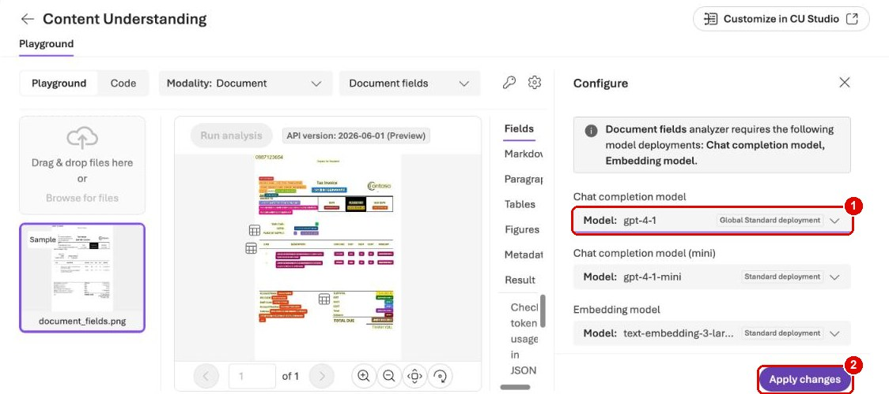
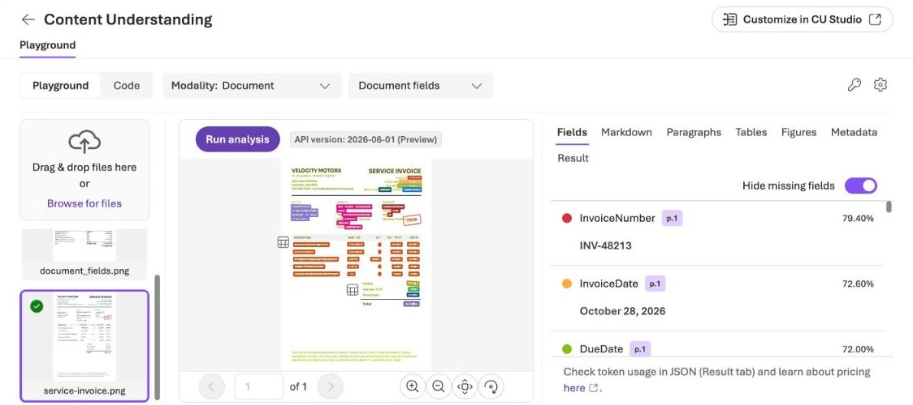
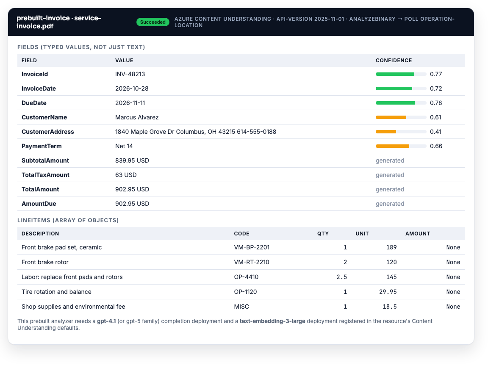
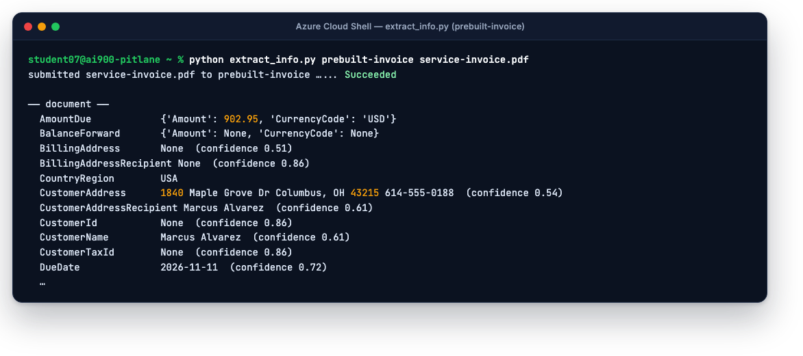
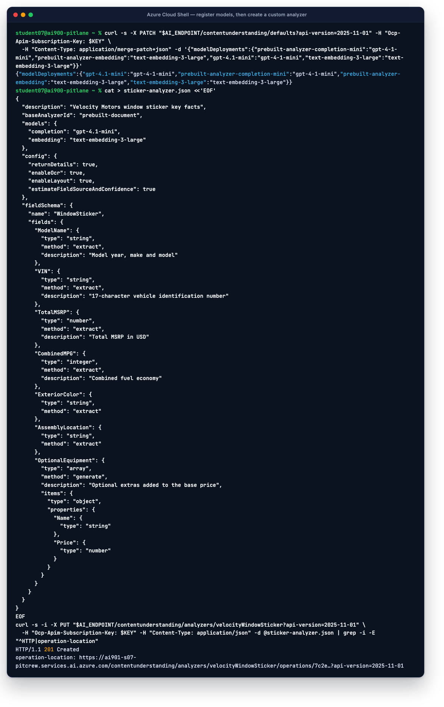
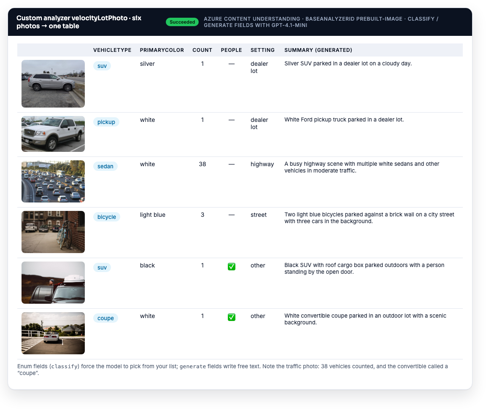
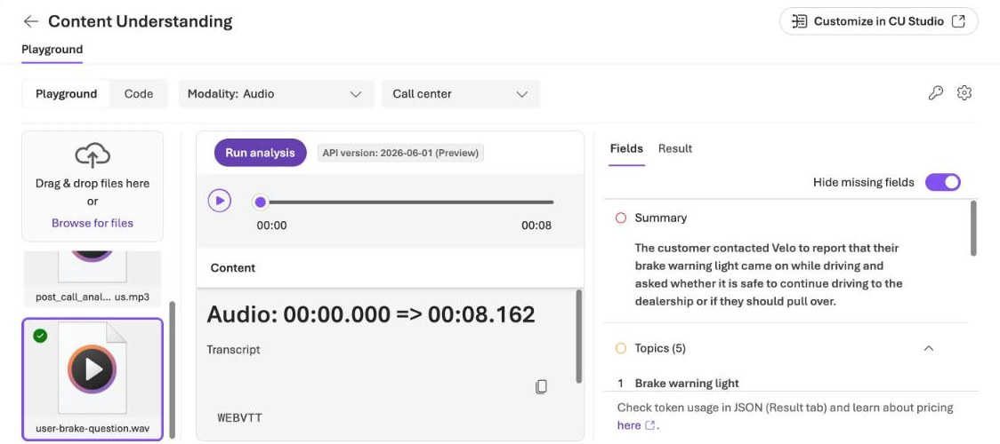
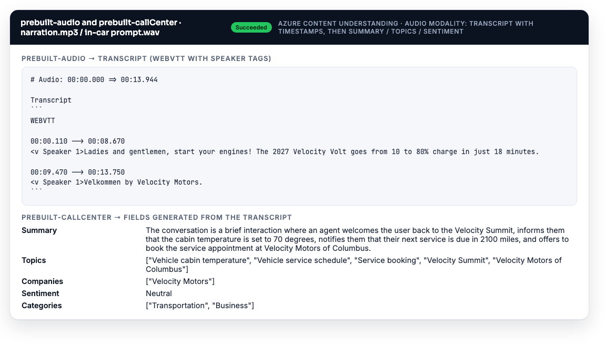
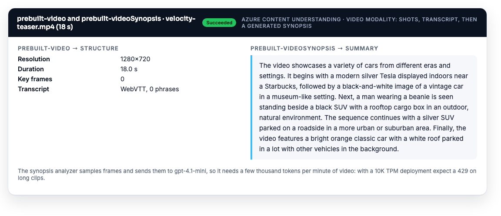
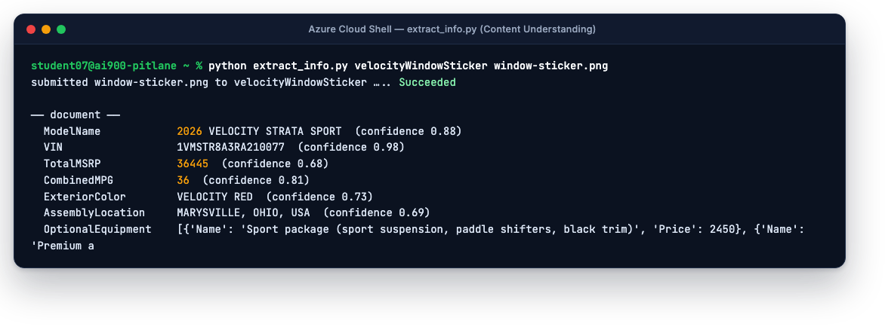

On this page
- Part 0 · The idea in five minutes
- Part 1 · Get the files and register the models
- Part 2 · Documents
- Part 3 · Build your own analyzer · the window sticker
- Part 4 · Images · lot photos into a table
- Part 5 · Audio and video
- Part 6 · The lightweight app
- Troubleshooting
- Quick quiz
- Pit wall debrief · what you learned
Finance keys 900 service invoices a month by hand. The used-car team retypes window stickers. Marketing cannot find the clip where the Volt's charging time is mentioned. The pit crew's answer is one service with one habit: send a file, get fields.
Part 0The idea in five minutes
prebuilt-invoice, prebuilt-receipt, prebuilt-idDocument, prebuilt-callCenter, prebuilt-videoSynopsis…) know their fields already. Custom analyzers start from a base (prebuilt-document, prebuilt-image, prebuilt-audio, prebuilt-video) and add your field schema.type (string, number, integer, boolean, date, array, object), a method (extract = copy what is on the page, with a source and confidence; generate = write it, e.g. a summary; classify = pick one of your enum values) and a description, which is the prompt the model follows.PATCH /contentunderstanding/defaults). The prebuilt field analyzers want a full gpt-4.1-class model (you deploy gpt-4-1 in Part 1); custom analyzers are happy with gpt-4.1-mini.POST …/analyzers/{id}:analyzeBinary returns 202 Accepted and an Operation-Location header; you GET that URL until status is Succeeded. Creating a custom analyzer works the same way.result.contents[]: one entry per document, image, audio track or video segment, each with markdown, fields (valueString, valueNumber, valueArray…, plus confidence and source for extracted fields), and for media, startTimeMs/endTimeMs, transcripts and key frames.Send a file, get fields.Documents, images, audio and video all come back in the same shape: markdown of the content, plus the typed fields you named. One habit, four modalities.
Documents and forms → prebuilt analyzers or a custom schema on prebuilt-document. Images → a custom schema on prebuilt-image (classify / describe). Audio → transcript, then fields such as summary, topics, sentiment (prebuilt-callCenter). Video → shots, key frames, transcript, synopsis (prebuilt-video, prebuilt-videoSynopsis). The portal playground lives at Services → Document Intelligence and Content Understanding; the API version is 2025-11-01; analyzer IDs cannot contain hyphens; it is asynchronous.
Part 1Get the files and register the models
Files on your laptop, for the portal: service-invoice.png, window-sticker.png and user-brake-question.wav (the brake-light call from Lap 4). The playground uploads from the computer your browser runs on.
Files and variables in Cloud Shell, for Parts 3 to 6. Paste this in shell.azure.com whichever path you take below:
export STUDENT=s07; export RG=rg-ai901-$STUDENT; export NAME=ai901-$STUDENT-pitcrew; export LOC=eastus2; export PROJECT=proj-ai901-$STUDENT export KEY=$(az cognitiveservices account keys list -n $NAME -g $RG --query key1 -o tsv) export AI_ENDPOINT=https://$NAME.services.ai.azure.com; export FOUNDRY_ENDPOINT_AI=$AI_ENDPOINT AI_KEY=$KEY for f in service-invoice.pdf window-sticker.png velocity-teaser.mp4; do curl -sLO https://varoonsahgal.github.io/az901/downloads/$f; done curl -sLo narration.mp3 https://varoonsahgal.github.io/az901/media/velo-andrew-multilingual.mp3 curl -sLO https://varoonsahgal.github.io/az901/downloads/lot-photos.zip && unzip -oq lot-photos.zip -d lot


Content Understanding reads pixels and sound itself, but turning them into fields takes language models that you deploy and hand to it. Two more deployments, then one settings panel.
Deploy an embedding model. Same flow as Lap 0: Models → Deploy ▾ → Deploy a base model, find text-embedding-3-large, Deploy → Custom settings:
- Deployment name:
text-embedding-3-large - Deployment type: Standard, Tokens per Minute Rate Limit:
10000, then Deploy.
Why embeddingsOn a long document the service turns passages into vectors to find the parts that matter for each field, the same idea as file search in Lap 3. Without an embedding model, document field extraction refuses to start.
- Deployment name:
Deploy gpt-4.1. Same flow. Search
gpt-4.1and open the card named exactly gpt-4.1 (not mini, not nano). Deploy → Custom settings:- Deployment name:
gpt-4-1(hyphens, likegpt-4-1-mini). - Deployment type: Global Standard. Not Standard this time.
- Tokens per Minute Rate Limit:
20000, then Deploy.
Why the full modelContent Understanding's field-extraction analyzers insist on a full gpt-4.1-class completion model; they do not accept mini. Reading thirty invoice fields correctly is worth the bigger engine.
Why Global StandardThat is where the quota is: Global Standard gpt-4.1 has 1,000K tokens per minute in East US 2 on this subscription, so twenty students at 20K fit with room to spare. Global means a request may be processed in any Azure region. Fine for our fictional invoices; for real customer documents with data-residency rules you would pick Data Zone Standard or Standard.
- Deployment name:
Open Content Understanding. In the left menu select Services → Document Intelligence and Content Understanding. The page lists 74 prebuilt analyzers in groups: Content extraction (OCR (Read), Layout, General document extraction), Procurement, US tax, Legal, Identity, Payment & banking, and Multimodal RAG and Search. Open any one, for example OCR (Read), to reach the playground.
Why browse the groupsFinance asks "can it read invoices?", HR asks "ID cards?", the F&I desk asks "bank statements?". The groups answer before anyone writes a schema: check for a prebuilt first, build your own only when none fits.
Register the models. In the playground's analyzer dropdown choose Document fields. A Model deployments required dialog appears; select Deploy models. The Configure panel opens on the right:
- 1Chat completion model:
gpt-4-1. The list also offers to deploy other models; pick your own under Deployments. - Chat completion model (mini):
gpt-4-1-mini - Embedding model:
text-embedding-3-large - 2Select Apply changes.

Why onceThis is the portal version of the defaults call in the Cloud Shell tab. It is stored on your Foundry resource, so every analyzer you run from here on, prebuilt or your own, uses these three deployments. You do it once per resource.
- 1Chat completion model:
Same result, by API: this is what the portal did for you.
Deploy an embedding model (field extraction on documents needs one) next to your gpt-4.1-mini from Lap 0, and gpt-4.1, which the prebuilt field analyzers require (Global Standard is where the gpt-4.1 quota is):
az cognitiveservices account deployment create --name $NAME --resource-group $RG \ --deployment-name text-embedding-3-large --model-name text-embedding-3-large --model-version 1 --model-format OpenAI \ --sku-name Standard --sku-capacity 10 -o table az cognitiveservices account deployment create --name $NAME --resource-group $RG \ --deployment-name gpt-4-1 --model-name gpt-4.1 --model-version 2025-04-14 --model-format OpenAI \ --sku-name GlobalStandard --sku-capacity 20 -o tableTell Content Understanding which deployments to use. The keys on the left are the service's model aliases; the values are your deployment names.
curl -s -X PATCH "$AI_ENDPOINT/contentunderstanding/defaults?api-version=2025-11-01" -H "Ocp-Apim-Subscription-Key: $KEY" \ -H "Content-Type: application/merge-patch+json" \ -d '{"modelDeployments":{"prebuilt-analyzer-completion":"gpt-4-1","gpt-4.1":"gpt-4-1","prebuilt-analyzer-completion-mini":"gpt-4-1-mini","prebuilt-analyzer-embedding":"text-embedding-3-large","gpt-4.1-mini":"gpt-4-1-mini","text-embedding-3-large":"text-embedding-3-large"}}' curl -s "$AI_ENDPOINT/contentunderstanding/analyzers?api-version=2025-11-01" -H "Ocp-Apim-Subscription-Key: $KEY" | jq '[.value[].analyzerId] | length, .[0:12]'The second command lists the prebuilt analyzers (about 90, from
prebuilt-invoicetoprebuilt-tax.us.w2toprebuilt-videoSynopsis).
Part 2Documents
Run the invoice. In the playground keep Modality: Document and the analyzer Document fields. Upload
service-invoice.pngwith Browse for files (or drag it onto the panel), select it, then Run analysis.Why Document fieldsIt is a general-purpose field extractor: we never told it the file was an invoice, and it came back with invoice fields. That is the 900-invoices-a-month problem from the story, with no schema written.
Read the Fields tab. Each field has a value, a confidence, a page badge (p.1) and a coloured dot that matches a coloured box on the document:
InvoiceNumberINV-48213 at 79.40%,InvoiceDateOctober 28, 2026 at 72.60%,DueDateat 72.00%, and on down the page. Hide missing fields hides the fields this invoice does not have.
Then open the other tabs: Markdown (the whole invoice as text), Paragraphs, Tables (the parts and labour lines), Figures, Metadata, and Result, the raw JSON your code would get, including the tokens the analysis used.
Every field points back to the paper.The page badge and the coloured box are the field's source. A clerk checks a 72% date against the document in one glance instead of retyping the invoice.
Invoice specialists. Look in the Procurement group for analyzers built for invoices and purchase paperwork. Run one on the same file and compare its field list with Document fields.
No model at all. Switch the analyzer to Layout (or OCR (Read)) and run
window-sticker.png. The Markdown tab shows the heading2026 VELOCITY STRATA SPORT, the equipment list and the price table, in reading order. That markdown is what the language model reads when you ask for fields.
Same results, by API. The playground's Code tab shows these calls as code.
OCR and layout, no model needed.
prebuilt-documentreturns markdown with headings, tables and reading order. Send the window sticker, then poll:OP=$(curl -s -i -X POST "$AI_ENDPOINT/contentunderstanding/analyzers/prebuilt-document:analyzeBinary?api-version=2025-11-01" \ -H "Ocp-Apim-Subscription-Key: $KEY" -H "Content-Type: image/png" --data-binary @window-sticker.png | grep -i operation-location | cut -d' ' -f2 | tr -d '\r') sleep 8; curl -s "$OP" -H "Ocp-Apim-Subscription-Key: $KEY" | jq -r '.status, .result.contents[0].markdown' | head -30You get
# 2026 VELOCITY STRATA SPORT, the equipment list as bullets and the price table as HTML, in order. That markdown is what the model reads in the next step.A prebuilt form analyzer: the invoice.
prebuilt-invoiceknows thirty invoice fields and line items. It insists on a gpt-4.1 (or gpt-5-family) completion model, which is why Part 1 deployedgpt-4-1and mappedprebuilt-analyzer-completionto it:OP=$(curl -s -i -X POST "$AI_ENDPOINT/contentunderstanding/analyzers/prebuilt-invoice:analyzeBinary?api-version=2025-11-01" \ -H "Ocp-Apim-Subscription-Key: $KEY" -H "Content-Type: application/pdf" --data-binary @service-invoice.pdf | grep -i operation-location | cut -d' ' -f2 | tr -d '\r') sleep 20; curl -s "$OP" -H "Ocp-Apim-Subscription-Key: $KEY" | jq '.status, (.result.contents[0].fields | keys)'Here is the service invoice through it, typed values and all:


Notice the field types:
TotalAmountis a currency object withAmountandCurrencyCode, dates are ISO dates, and line items are an array of objects. Confidence is per field.python extract_info.py prebuilt-invoice service-invoice.pdf(Part 6) prints them all.
Part 3Build your own analyzer · the window sticker
Prebuilt analyzers know other people's paperwork. The Velocity window sticker is ours: no prebuilt knows that the used-car team wants the VIN, the total MSRP and the options with their prices. So you build an analyzer: pick a base, name the fields, and describe each one in plain English.
The playground's Customize in CU Studio button (top right) opens Content Understanding Studio, a separate site for building your own analyzers with clicks. Explore it if you finish early. Here we write the analyzer as JSON in Cloud Shell, because the JSON shows the three things that matter most clearly: each field's type, its method, and the description the model follows.
Describe the fields you want. The
descriptionis the instruction;methodsays whether to copy, write or choose.cat > sticker-analyzer.json <<'JSON' { "description": "Velocity Motors window sticker key facts", "baseAnalyzerId": "prebuilt-document", "models": {"completion": "gpt-4.1-mini", "embedding": "text-embedding-3-large"}, "config": {"returnDetails": true, "enableOcr": true, "enableLayout": true, "estimateFieldSourceAndConfidence": true}, "fieldSchema": { "name": "WindowSticker", "fields": { "ModelName": {"type": "string", "method": "extract", "description": "Model year, make and model"}, "VIN": {"type": "string", "method": "extract", "description": "17-character vehicle identification number"}, "TotalMSRP": {"type": "number", "method": "extract", "description": "Total MSRP in USD"}, "CombinedMPG": {"type": "integer", "method": "extract", "description": "Combined fuel economy"}, "ExteriorColor": {"type": "string", "method": "extract"}, "AssemblyLocation": {"type": "string", "method": "extract"}, "OptionalEquipment":{"type": "array", "method": "generate", "description": "Optional extras added to the base price", "items": {"type": "object", "properties": {"Name": {"type": "string"}, "Price": {"type": "number"}}}} } } } JSON curl -s -i -X PUT "$AI_ENDPOINT/contentunderstanding/analyzers/velocityWindowSticker?api-version=2025-11-01" \ -H "Ocp-Apim-Subscription-Key: $KEY" -H "Content-Type: application/json" -d @sticker-analyzer.json | grep -i -E "^HTTP|operation-location"
Analyzer IDs may not contain hyphens (we learned that the hard way:
velocity-window-stickeris rejected,velocityWindowStickeris fine). Creation is asynchronous; wait for the operation to saySucceeded(about 20 seconds).Analyze the sticker with your analyzer, exactly as in Part 2 but with your ID, then read the fields:
OP=$(curl -s -i -X POST "$AI_ENDPOINT/contentunderstanding/analyzers/velocityWindowSticker:analyzeBinary?api-version=2025-11-01" \ -H "Ocp-Apim-Subscription-Key: $KEY" -H "Content-Type: image/png" --data-binary @window-sticker.png | grep -i operation-location | cut -d' ' -f2 | tr -d '\r') sleep 15; curl -s "$OP" -H "Ocp-Apim-Subscription-Key: $KEY" | jq '.status, (.result.contents[0].fields | map_values({v: (.valueString // .valueNumber // .valueInteger // .valueArray), confidence}))'
The VIN comes back at 0.98 confidence with its source location on the page; the generated array of options has no confidence because the model composed it.
Extracted fields carry a source and a confidence. Generated fields carry neither, because the model wrote them.A review process should treat the two differently: verify the first by exception, read the second every time.
Part 4Images · lot photos into a table
A second analyzer of your own, this time on photographs. Base the analyzer on prebuilt-image, use classify with an enum where you want controlled values, and generate for free text.
cat > lot-analyzer.json <<'JSON'
{
"description": "Dealer lot photo triage",
"baseAnalyzerId": "prebuilt-image",
"models": {"completion": "gpt-4.1-mini"},
"config": {"returnDetails": true},
"fieldSchema": {"name": "LotPhoto", "fields": {
"VehicleType": {"type": "string", "method": "classify", "description": "Primary vehicle type in the photo", "enum": ["sedan","suv","pickup","minivan","coupe","motorcycle","bicycle","none"]},
"PrimaryColor": {"type": "string", "method": "generate", "description": "Dominant color of the primary vehicle"},
"VehicleCount": {"type": "integer", "method": "generate", "description": "Number of motor vehicles visible"},
"PeopleVisible":{"type": "boolean", "method": "generate", "description": "True if any person is visible"},
"Setting": {"type": "string", "method": "classify", "description": "Where the photo was taken", "enum": ["dealer lot","street","highway","garage","showroom","other"]},
"Summary": {"type": "string", "method": "generate", "description": "One-sentence description a used-car listing could use"}
}}
}
JSON
curl -s -i -X PUT "$AI_ENDPOINT/contentunderstanding/analyzers/velocityLotPhoto?api-version=2025-11-01" \
-H "Ocp-Apim-Subscription-Key: $KEY" -H "Content-Type: application/json" -d @lot-analyzer.json | grep -i -E "^HTTP"
sleep 20
for f in suv-volvo-xc90 pickup-ford-f150 traffic-auckland bicycles-wall; do
OP=$(curl -s -i -X POST "$AI_ENDPOINT/contentunderstanding/analyzers/velocityLotPhoto:analyzeBinary?api-version=2025-11-01" \
-H "Ocp-Apim-Subscription-Key: $KEY" -H "Content-Type: image/jpeg" --data-binary @lot/$f.jpg | grep -i operation-location | cut -d' ' -f2 | tr -d '\r')
sleep 12; echo "== $f"; curl -s "$OP" -H "Ocp-Apim-Subscription-Key: $KEY" | jq -c '.result.contents[0].fields | map_values(.valueString // .valueInteger // .valueBoolean)'
done
Six photos, one table. The traffic photo counted 38 vehicles; the convertible became a "coupe" because that was the closest allowed value, which is exactly what an enum is for.
Part 5Audio and video
The service desk records every call. Nobody listens to them twice. Content Understanding turns a call into a summary and a list of topics a manager can scan.
Switch to audio. In the playground set Modality to Audio. The analyzer list changes to audio analyzers: choose Call center (the other option is Audio search).
Run the brake call. Upload
user-brake-question.wavfrom your laptop, select it, and Run analysis. A player appears so you can hear the eight seconds you are analysing.Read the fields. Summary: "The customer contacted Velo to report that their brake warning light came on while driving and asked whether it is safe to continue driving to the dealership or if they should pull over." Topics (5), starting with Brake warning light. Under Content you get
Audio: 00:00.000 => 00:08.162and the transcript in WEBVTT, the subtitle format with timestamps.
00:08.162 and a WEBVTT transcript, Fields showing the Summary about the brake warning light and Topics (5) starting with Brake warning light" loading="lazy" title="Click to zoom">Lap 4's speech-to-text heard "break". This summary says "brake".The transcript is still sound turned into words; the summary is written by the language model, which knows a warning light on a dashboard is a brake light. Context fixed what the ear got wrong.
Same idea, by API, on the multilingual narration track. prebuilt-audio transcribes with timestamps and speaker tags (no model needed); prebuilt-callCenter adds a summary, topics, companies and sentiment.
OP=$(curl -s -i -X POST "$AI_ENDPOINT/contentunderstanding/analyzers/prebuilt-audio:analyzeBinary?api-version=2025-11-01" \
-H "Ocp-Apim-Subscription-Key: $KEY" -H "Content-Type: audio/mpeg" --data-binary @narration.mp3 | grep -i operation-location | cut -d' ' -f2 | tr -d '\r')
sleep 20; curl -s "$OP" -H "Ocp-Apim-Subscription-Key: $KEY" | jq -r '.status, .result.contents[0].markdown'
Note the transcript's weak spot: the German sentence "Willkommen bei" became "Velkommen by". Language detection in audio is per file; tell the analyzer the locales when you know them.
Video (Cloud Shell; the playground also has Modality: Video if you want to try the teaser there).
prebuilt-videoreturns structure (resolution, duration, key frames, transcript);prebuilt-videoSynopsissamples frames through the completion model and writes a synopsis. The 18-second launch teaser:OP=$(curl -s -i -X POST "$AI_ENDPOINT/contentunderstanding/analyzers/prebuilt-videoSynopsis:analyzeBinary?api-version=2025-11-01" \ -H "Ocp-Apim-Subscription-Key: $KEY" -H "Content-Type: video/mp4" --data-binary @velocity-teaser.mp4 | grep -i operation-location | cut -d' ' -f2 | tr -d '\r') sleep 45; curl -s "$OP" -H "Ocp-Apim-Subscription-Key: $KEY" | jq -r '.status, .result.contents[0].fields.Summary.valueString'
Frames cost tokens: a longer clip on a 10K-TPM deployment will hit
429. For the class the 18-second teaser is safe; for production you size the deployment to the video.
Part 6The lightweight app
Everything above is one function: send bytes, poll, print fields. extract_info.py is that function with a command line. Any analyzer, any modality.
curl -sO https://varoonsahgal.github.io/az901/pit-crew/extract_info.py
python extract_info.py velocityWindowSticker window-sticker.png
python extract_info.py prebuilt-audio narration.mp3"""Lap 6 · Information extraction with Azure Content Understanding (a Foundry Tool).
Works on documents, images, audio and video. This script sends a file to an analyzer and prints the fields.
Run: python extract_info.py prebuilt-invoice service-invoice.pdf
python extract_info.py velocityWindowSticker window-sticker.png
python extract_info.py prebuilt-audio teaser.mp3
Needs: pip install requests
Env: FOUNDRY_ENDPOINT_AI (https://<resource>.services.ai.azure.com) AI_KEY
"""
import os, sys, time, mimetypes, requests
analyzer, path = (sys.argv + ["prebuilt-invoice", "service-invoice.pdf"])[1:3]
base = os.environ["FOUNDRY_ENDPOINT_AI"].rstrip("/") + "/contentunderstanding"
ver = "api-version=2025-11-01"
headers = {"Ocp-Apim-Subscription-Key": os.environ["AI_KEY"]}
ctype = mimetypes.guess_type(path)[0] or "application/octet-stream"
# 1) Start the analysis (long-running operation → 202 + Operation-Location)
r = requests.post(f"{base}/analyzers/{analyzer}:analyzeBinary?{ver}", headers={**headers, "Content-Type": ctype}, data=open(path, "rb").read())
r.raise_for_status()
op = r.headers["Operation-Location"]
print(f"submitted {path} to {analyzer} …", end="", flush=True)
# 2) Poll until it finishes
while True:
time.sleep(3); result = requests.get(op, headers=headers).json()
print(".", end="", flush=True)
if result["status"].lower() in ("succeeded", "failed"): break
print(" " + result["status"])
if result["status"].lower() == "failed": sys.exit(result.get("error"))
# 3) Read the results: every content item has markdown, and (for field analyzers) typed fields
def value(f):
for k in ("valueString", "valueNumber", "valueInteger", "valueBoolean", "valueDate"):
if k in f: return f[k]
if "valueArray" in f: return [value(i) for i in f["valueArray"]]
if "valueObject" in f: return {k: value(v) for k, v in f["valueObject"].items()}
return f.get("content")
for content in result["result"]["contents"]:
span = f" {content['startTimeMs']/1000:.1f}s→{content['endTimeMs']/1000:.1f}s" if "startTimeMs" in content else ""
print(f"\n── {content.get('kind', 'content')}{span} ──")
for name, field in content.get("fields", {}).items():
conf = f" (confidence {field['confidence']:.2f})" if field.get("confidence") is not None else ""
print(f" {name:20s} {value(field)!s:.110}{conf}")
if not content.get("fields"):
print(" markdown:", content.get("markdown", "")[:600].replace("\n", "\n "))
Your resource has gpt-4-1 and text-embedding-3-large deployments, registered with Content Understanding (portal Configure panel or the PATCH …/defaults); you have invoice fields from Document fields and a summary of the brake call from Call center; you created velocityWindowSticker and velocityLotPhoto; you have fields for the sticker, a table for four photos, a transcript for the narration and (optionally) a synopsis for the teaser; and extract_info.py runs.
🏁Overtake · if you finish early
No steps given. Each takes five to ten minutes.
- One more field. Add
DestinationCharge(number, extract) andDrivetrain(string, classify, enum FWD / AWD / RWD) to the sticker schema,DELETEthe analyzer,PUTit again and re-run. Which method did you pick for each, and why? - The brake call, by API. You ran it in the playground; now send
question.wavfrom Lap 4 toprebuilt-callCenterwithextract_info.py. Does the summary match the playground word for word? Which fields does the JSON hold that Hide missing fields hid, and would you trust a sentiment from eight seconds of audio? - Whole lot, one table. Loop
extract_info.py velocityLotPhotoover all sixteen photos and collectVehicleTypeandVehicleCountinto a CSV. Compare the counts with Azure AI Vision's object boxes from Lap 5. Where they disagree, who is right?
Troubleshooting
Portal path: "Failed to start analysis. Request failed with status code 400"
Usually right after you deploy gpt-4-1: the new deployment takes a few minutes to become visible to Content Understanding (the API says DeploymentIdNotFound). Wait two to three minutes and select Run analysis again. Still failing after five? Open the Configure panel again and check that Chat completion model is your gpt-4-1 under Deployments.
Portal path: "Model deployments required" every time I pick Document fields
The models were never applied. Select Deploy models, choose your three deployments in the Configure panel, and finish with Apply changes; closing the panel without it changes nothing.
Portal path: gpt-4.1 will not deploy, or says no quota
Check the deployment type: Global Standard, not Standard. Global Standard is where this subscription's gpt-4.1 quota is: 1,000K tokens per minute in East US 2. Keep the rate limit at 20000 so twenty people fit.
"The 'analyzerId' cannot contain '-'"
Use letters and digits only: velocityWindowSticker, not velocity-window-sticker.
"Defaults have not yet been set to 'prebuilt-analyzer-embedding'"
Run the PATCH …/defaults from Part 1 (or set Embedding model in the portal Configure panel) after deploying text-embedding-3-large. Custom document analyzers need both a completion and an embedding mapping.
"Provided model 'gpt-4.1-mini' is not supported by this analyzer"
Some prebuilt analyzers (prebuilt-invoice, prebuilt-receipt…) accept only gpt-4.1 or gpt-5-family models. GET …/analyzers/prebuilt-invoice shows supportedModels. Deploy gpt-4-1 as in Part 1 and map prebuilt-analyzer-completion to it (portal: the Chat completion model in the Configure panel), or use a custom schema on prebuilt-document, which accepts gpt-4.1-mini.
410 "The requested API version has been retired"
The preview versions (2024-12-01-preview, 2025-05-01-preview) are gone. Use api-version=2025-11-01.
Status Failed with RateLimit / 429 inside the error
The completion deployment ran out of tokens per minute, typically on video. Wait a minute and retry, shorten the clip, or raise the deployment capacity.
404 "Analyzer … with status 'Failed' is not ready"
Creation failed (usually a model mapping problem). GET …/analyzers/<id> shows the error; DELETE it, fix the JSON, PUT again.
Quick quiz
Which base analyzer would you use for a custom schema over photographs?
prebuilt-image. Documents use prebuilt-document; audio and video use prebuilt-audio and prebuilt-video.
What is the difference between extract and generate field methods?
Extract copies a value that appears in the content and returns its source and confidence; generate has the model compose a value (a summary, a count) with no source. Classify picks one of your enum values.
You POST to :analyzeBinary and get 202. What next?
GET the URL in the Operation-Location header until status is Succeeded, then read result.contents.
Which prebuilt analyzer gives a summary, topics and sentiment for a recorded call?
prebuilt-callCenter (on top of the transcript that prebuilt-audio produces).
Why does field extraction need model deployments but OCR does not?
OCR and layout are classic vision models inside the service. Turning text into typed fields, writing summaries and classifying use a GPT completion model (and embeddings for retrieval over long documents), which you supply from your own deployments.
Pit wall debrief · what you learned
- Content Understanding is one API for documents, images, audio and video: analyzers, field schemas, async operations, typed results with confidence.
- Prebuilt analyzers for common forms, runnable in the portal playground (Document fields, Call center, OCR, Layout); custom analyzers (base + schema) for your own paperwork and photos.
- Field methods: extract (with source), generate (composed), classify (enum). Models are registered once per resource.
- Audio gives transcripts and call-center fields; video gives key frames, transcripts and a synopsis.
extract_info.pyis the lightweight extraction app: send, poll, print.
Next: the checkered flag. Lap 7 · practice exam and cool-down →